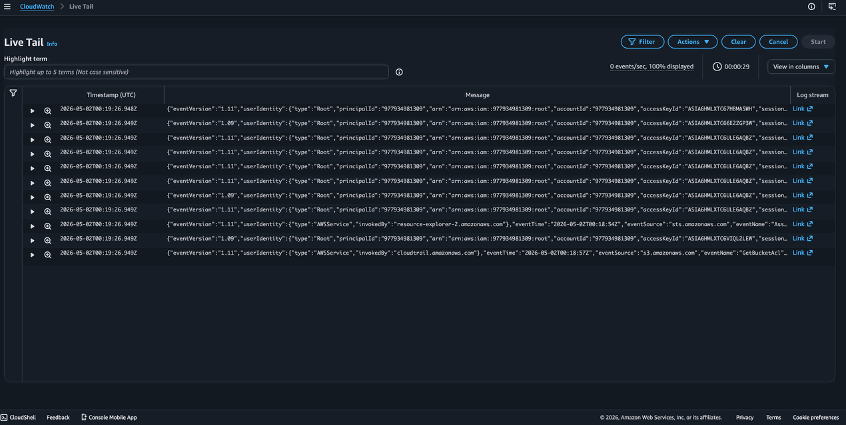
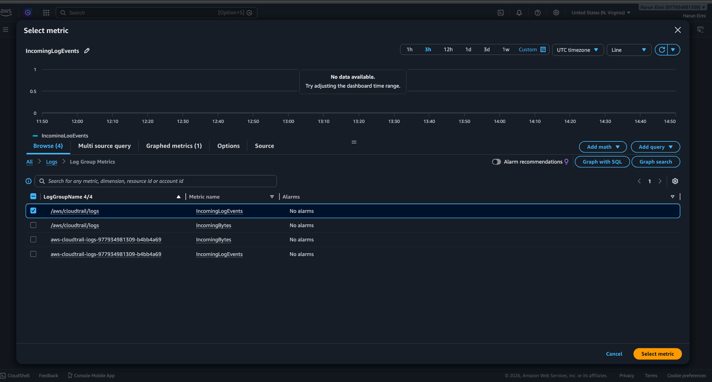
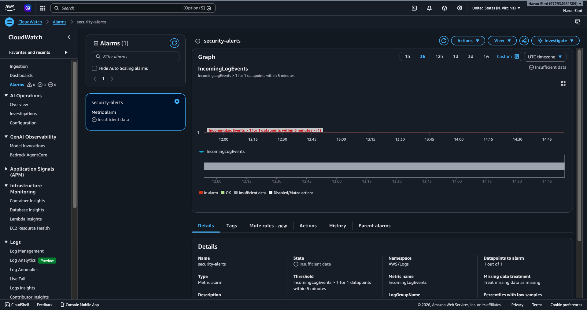
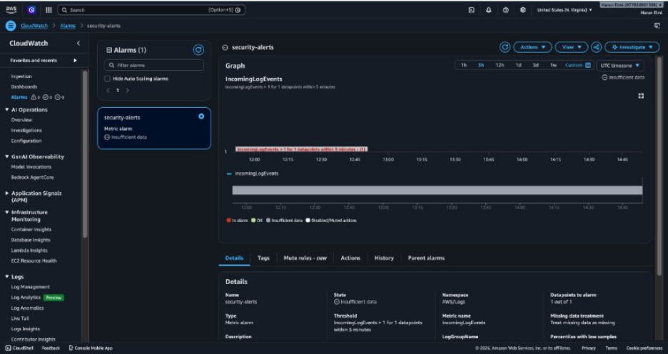

Created a cloud trail with SNS delivery notifications and active logging activity on AWS.

Monitoring the live trail via CloudWatch

Created the metric system used for the alarm and then created an alarm that triggers any errors in the system.

Alarm that triggers any error and sends an the SNS email notification within 5 minutes.